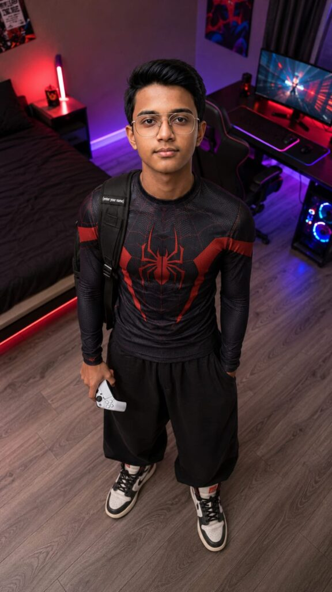
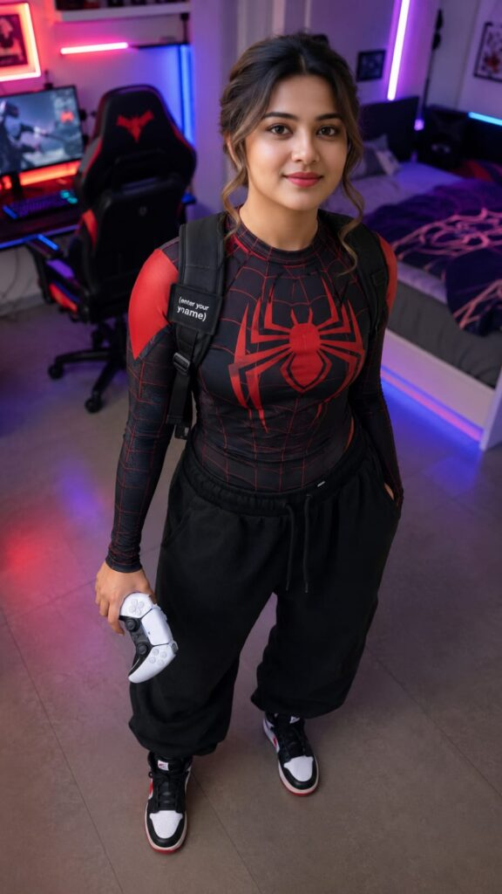
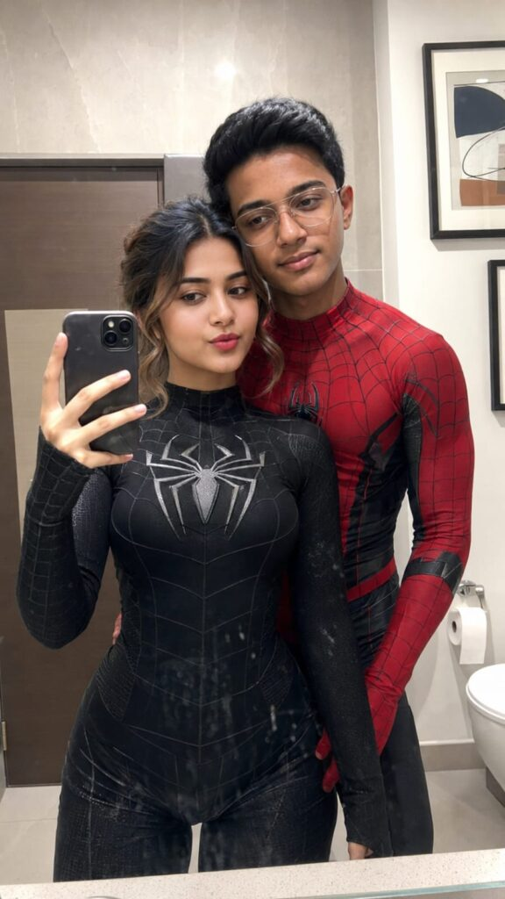
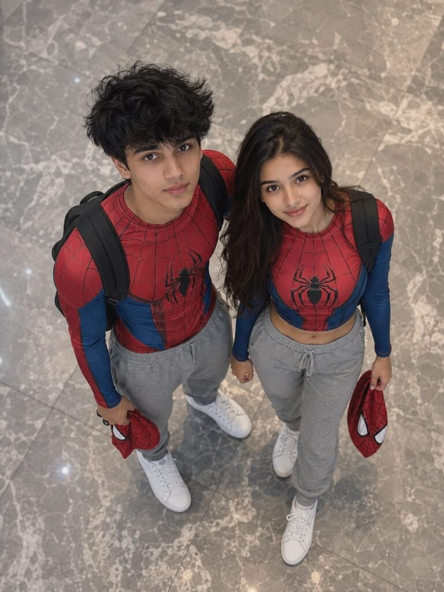
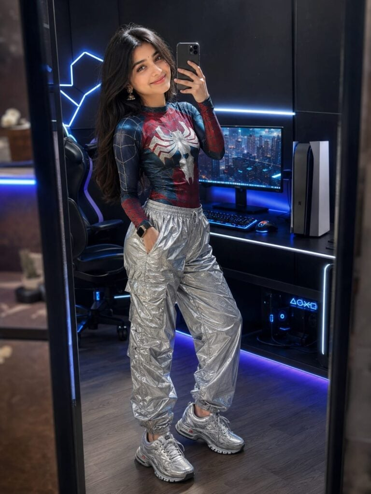
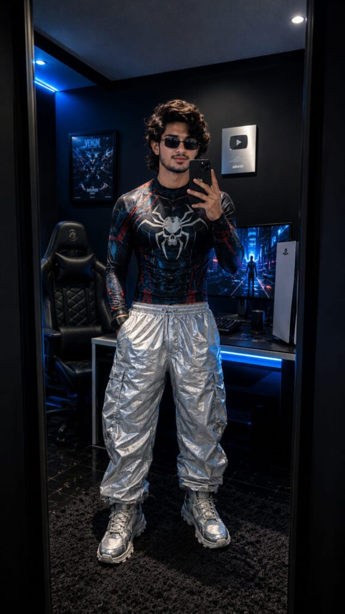

If you are looking for Viral SpiderMan Photo Prompts for ChatGPT, you are in the right place. These prompts help you create eye-catching SpiderMan-inspired AI images that look cinematic, realistic, and ready to go viral on Instagram, TikTok, or YouTube
With the right prompt, you can generate action-packed superhero portraits, dramatic city backgrounds, and stylish SpiderMan edits in just a few seconds. You don’t need advanced editing skills—just copy the prompt and use it with ChatGPT’s image generation.
In this article, you’ll find some of the best viral SpiderMan photo prompts that are easy to use and perfect for creating unique AI artwork. Let’s get started.
Want more awesome prompts?
Join our community and get the latest viral prompts daily.
Follow on Instagram







Viral SpiderMan Photo Prompts make it easy to create stunning AI-generated superhero images with minimal effort. Whether you want a realistic portrait, cinematic action scene, or trending social media photo, these prompts can help you achieve amazing results.
Feel free to customize the prompts by changing outfits, poses, lighting, or backgrounds to make your images stand out even more. Small changes can create completely unique results.
We hope these Viral SpiderMan Photo Prompts for ChatGPT help you create incredible AI photos that grab attention online. Save this page for future inspiration and keep experimenting with new creative ideas.